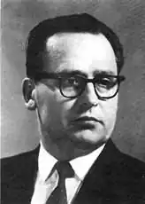
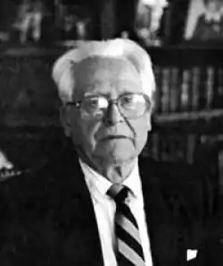
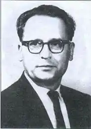
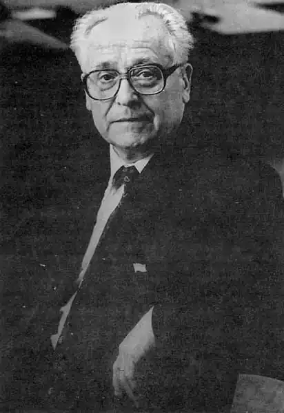

Яр Славутич
[…] Народився Григорій Михайлович Жученко (справжнє прізвище та ім'я Яра Славутича) 11 січня 1918 року в давньому [заснованому ще в XVII столітті] козацькому зимівнику, згодом — родовому хуторі Жученки, що поблизу села Благодатного (північна Херсонщина). Переживши кількастолітні життєві завірюхи й напасті, той козацький давній осередок не встояв перед новітньою ордою посланих "залізною волею" комуністичної Москви місцевих "активістів"-комнезамівців, які не лише все розтягли-розікрали, будівлі спалили і навіть колодязь засипали, щоб не відроджувалося тут господарсько-хліборобське життя. Мало того, "у вересні 1932p. 14-річного молодика заарештовують разом із батьком, який "не виконав плану до двору" (була тоді колективізаторами придумана така "геніальна" зачіпка: господареві-хліборобові спускався зі стелі взятий, спеціально завищений план поставок, — бувало, й не один, — за невиконання якого — арешт і висилка. — К.В.); батька везуть на заслання, а хлопець вискакує з потяга (на ходу) крізь отвір, прорізаний у стелі дірявого товарного вагона й таким чином урятовується", — це з початкових, так би мовити, віх свого коротко викладеного життєпису, накресленого самим Яром Славутичем у десятій збірці своїх поезій "Шаблі тополь" (К., 1992).
Далі там говориться, що навесні 1938 року, коли в Україні лютує голодомор, організований московським Кремлем, помирають його піврічна сестричка, бабуся та улюблений дід, а сам він порятувався лишень тому, що пас худобу в радгоспі й міг потайки підживитися молоком. "Тоді ж він складає присягу, продиктовану рідним дідом, — вижити й розказати всьому світові, як Москва нищить Україну..." Відзначає автор і 1938 рік, коли, будучи молодим поетом-студентом Запорізького педінституту, він опиняється у в'язниці за читання віршів О. Олеся та повістей В. Винниченка. "1941 року, під німецькою займанщиною, молодий вояк разом з іншими військовиками (такими ж радянськими, що потрапили в оточення. — К.В.) організовує в лісах північної України Чернигівську Січ, яка ставить за мету оберігати місцеве населення від німецьких грабунків, рятувати молодь, наловлену німцями та поліцаями для рабської праці у фатерлянді, а також готуватися стати армією Самостійної Української Держави — СУД; тоді ж, 1943 року, він, сотник Чернигівської Січі, втрачає дружину з одноденною донькою, яких спалюють гітлерівці, винищуючи українські села". Цю воєнну віху з його автожиттєпису я процитував повністю, щоб остаточно відкинути різні наклепи й інсинуації, котрими прислужники компартійної системи будь-що старалися оббрехати ім'я українського патріота, звинувачуючи його то в "невчиненій зраді", то в придуманому ними ж "прислужництві гітлерівцям". Хоча корінна причина цього була в іншому — в безкомпромісному викритті Славутичем страшних злочинств, чинених імперською Москвою проти України. До речі, в інтерв'ю, даному вже до свого 70-річчя, він уточнює, що до війни "був Григорій Жученко. Під цим іменем надрукував півдесятка віршів у літературних журналах чи альманахах... 1943 року я вперше виступив у пресі під іменем Яр Славутич. Це сталося в часописі "Нова Україна", де надруковано кілька віршів із циклу "Запорожці". З того часу я друкувався лише під цим іменем, що незабаром стало моїм легальним прізвищем". (Яр Славутич. "У вирі багатокультурности". Едмонтон, 1988, с. 138). Взагалі ж для тих, котрі вирвались із "залізних обіймів" сталінської тоталітарної системи і продовжували виступати проти неї, обрання псевдоніму — нового прізвища — стало явищем поширеним. І робилося це, щоб хоч якось зберегти своїх родичів, які залишались в Україні, від репресій. (Хоча й не завжди це вдавалося: система була пильна, каральний апарат мала вишколений і розгалужений). Опинившись у вільному світі, Яр Славутич, попри всі негаразди-необлаштованості — надто першої пори, — починає з наростаючою інтенсивністю вести боротьбу проти колоніального уярмлення України московською необільшовицькою імперією, раз і назавжди обравши за основу зброю в тій боротьбі слово правди, яке незмінно прагне донести до людей — до якомога ширшого загалу, користуючись чи то як поет засобами образного слова; чи то як науковець "мовою" фактів, логічно-невідпорних переконань; чи то як публіцист свідомий і вірний син свого народу, розповідаючи світові про тяжкі кривди, історичну наругу, постійно чинимі над українським народом його "братнім" північно-східним сусідою. У другій половині XX, такого страдницького і воднораз героїчного для країни, століття, коли сам напрям національно-визвольної боротьби українського народу поступово переходить від збройного до ідеологічного протистояння, коли на нашій "материковій" Україні нещадна сталінщина розгортає тотальний репресивний наступ на українство, ставлячи собі за мету остаточно його засимілювати, понищити самі рештки його національної самосвідомості, — в цих екстремальних, загрозливих для самого подальшого існування нації обставинах, — зокрема на діаспору, лягла історичної відповідальності місія: виступити захисником і вільним (від загроз репресій сталінщини) речником української нації, сказати про неї слово правди — розповісти всьому світові, сучасникам і нащадкам, у якому становищі вона опинилась і чому, якою вона є, яку історію має і чого прагне. Молодий поет з когорти національно-визвольних бійців Яр Славутич це відчув і усвідомив, — фактично першим своєю збіркою "Правдоносці" розпочав про це говорити поетично. Громадська думка діаспори із захопленням сприйняла його збірку, назвавши її "збіркою збірок", а його самого нарекла "правдоносцем", розцінювала її за вищими історикософічними національно-духовними вимірами: "як динамічне виверження поклику тих народних духовних цінностей, що були загнані війною (Другою світовою. — К. В.) в глибину української душі, як утвердження ідеалів Шевченка, Франка, Лесі Українки та інших виразників свого часу. Перед нами постає сконденсована спільність почувань багатьох поколінь, що будили й кликали нарід до нового життя, що ставили тверду вимогу до західного світу — пізнати нашу, українську правду". (Володимир Жила. "Правдоносець". В зб.: "Творчість Яра Славутича", Едмонтон, 1978, с. 7). Сьогоднішній читач в Україні має змогу познайомитись з основним у творчому доробку Яра Славутича. З набуттям державної незалежності на її теренах публікувались уже його оригінальні поетичні збірки: "Слово про Запорозьку Січ" (1991 та 2-ге, доповнене видання — 1992), "Шаблі тополь" (1992), а також вибрані "Твори в двох томах" (1994) і найповніше видання — "Твори, томи І — V", котре видавництво "Дніпро" дає до 80-річчя письменника. А ще окремими виданнями виходить в Україні: перший мартиролог українських діячів культури, понищених і репресованих кривавим сталінським режимом, — "Розстріляна муза" ("Либідь", 1993) та збірка вибраних досліджень і статей Яра Славутича — "Меч і перо" ("Дніпро", 1992), що дає нашому читачеві можливість скласти власне більш-менш чітке уявлення про коло поетичних, наукових (і громадсько-патріотичних, як правило, вони всі в нього нерозривні) зацікавлень Яра Славутича, як і про його творчу методу, що характеризується передовсім вірністю життєвій правді, вивіреністю і виваженістю суджень... Та ще — закоханістю в рідну Україну. Її свободу, незалежне державно-самостійне життя. Гадаю, що, ознайомившись з поетичними та науковими — глибоко патріотичними в основах своїх — набутками Яра Славутича, сучасник сам складе йому і належну оцінку, і шану та повагу за здійснене ним. Кость Волинський. З когорти українських правдоносців // Київ. — 1998. — №3-4. — С. 151-153.